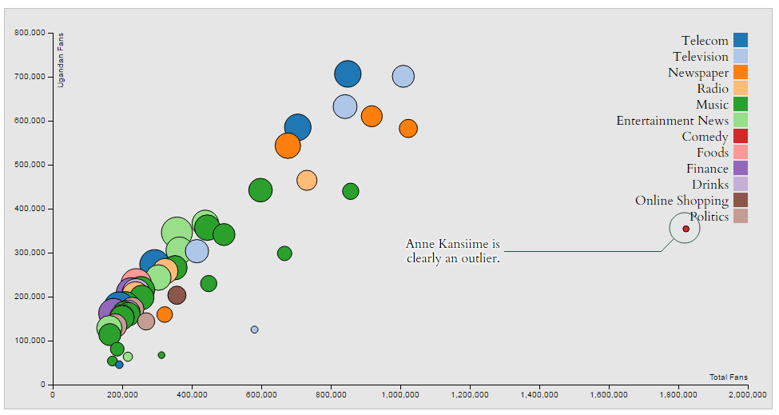

Matthew Kuch
Decision Science. Data Visualization.Impact.
Email: kuch.matthew@gmail.com | X (Formerly Twitter): @matthewkuch
Recent Work

Previous Work / Archives

UCE Performance Bumpchart
An interactive visualization of UCE performance.
2/10/2017

UCE Failure Rate Profile by District
A visual analysis of UCE failure rate.
2/16/2017
Kampala District Population Distribution by Parish
A map of all Parishes in Kampala district.
3/18/2017
Serious Crime Cases in Uganda over a 10 year period
Visualizing crime over time
3/26/2017
Map of RED Categorisation, Uganda
A categorical analysis of Ugandan districts based on immunization coverage rates
3/27/2017
What do Ugandans like on Facebook?
An analytical study of what Ugandans like on facebook
5/26/2017